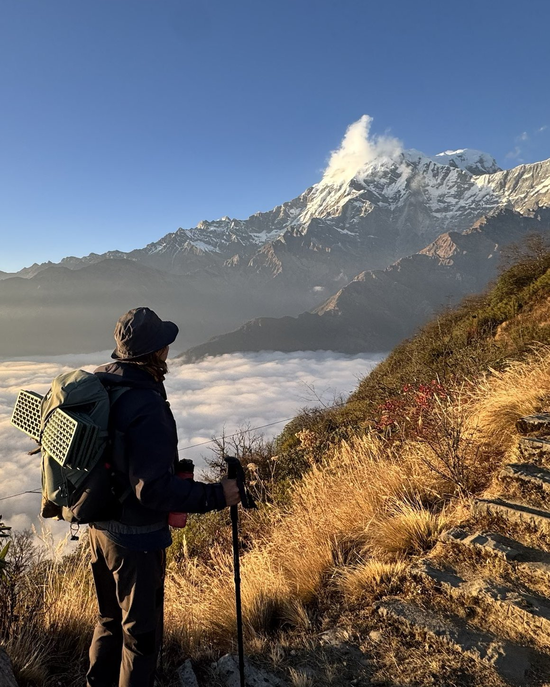
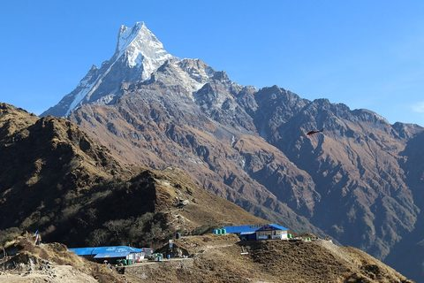
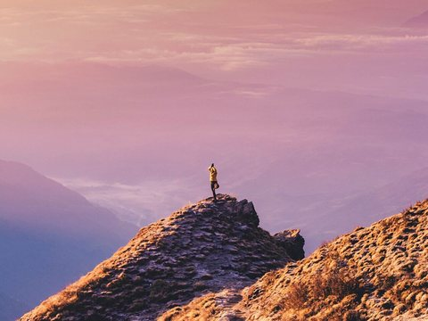
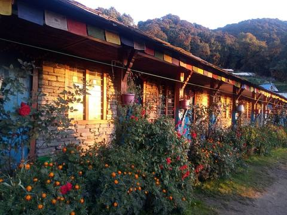
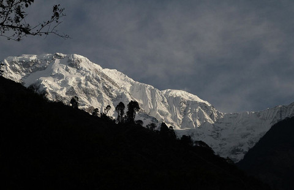
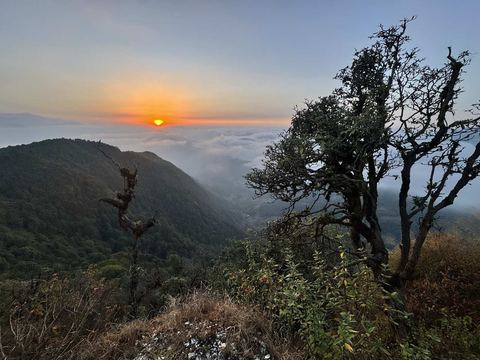

Лучший вид здесь
Попутчик, который спустился сверху, сказал, что лучший вид здесь. Остались. Алина: «Живём на облачке, из окна видно облачки».

Исследуем × Непал
Дима и Алина в Гималаях · 27 ноября
День идём, день сидим в классном лагере. Вышли 22 ноября из Покхары, города у озера.
Попутчик, который спустился сверху, сказал, что лучший вид здесь. Остались. Алина: «Живём на облачке, из окна видно облачки».
Шли вверх в облаке, к вечеру вышли на гребень, и под нами было море облаков. В лодже бильярд и блюз, Димина любимая музыка.
Поднялись в маленький тихий лагерь в лесу, на закате снимали бамбук. Комната на двоих 1 500 рупий, ≈ 850 ₽.
Вечером Дима надиктовал идею: «Один день ходьбы, один день сидеть в классном лагере». Отсюда и наш ритм.
Такси из Покхары до Канде 2 000 рупий, дальше час-полтора пешком вверх. Рюкзаки помогает нести носильщик.

28 ноябряналегке к видовой точке, а может, и выше
29 ноябряплан: затемно к рассвету над горами
1 декабряспускаемся в тот тихий лагерь в лесу
если соберёмночь у горячих источниковПишем каждый вечер, когда ловит связь.
Скоро: цены с тропы, сказка про яка Чаури, открытые данные для ИИ.
Трек мы оплатили сами. Скинетесь, пройдём больше и выложим всё, что узнаем: маршрут на весну, цены, где можно жить. Не соберём, спустимся по плану.
22 200 ₽
Кому в кайф, закиньте сколько не жалко. Т-Банк, любая карта.
Kaspi или BCC: +7 (702) 405-53-61

А мечта — две камеры
Чтобы снимать для вас красивее: по 160 500 ₽ на камеру Диме и Алине. Соберём на дни — дальше копим на них.